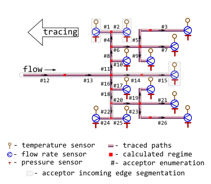
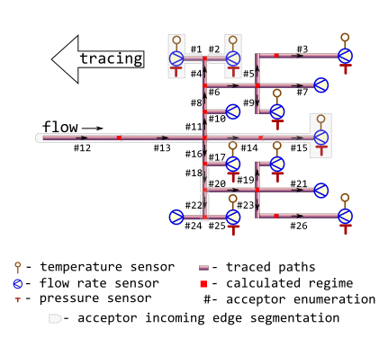

Minenergo-325. Massively trace backwards thermal-hydraulic regime for district heating network
Source:R/m325tracebw.R
m325tracebw.RdTrace values of thermal-hydraulic regime (temperature, pressure, flow rate, and other) in the bunched pipeline against the flow direction using norms of heat loss values prescribed by Minenergo Order 325.
Algorithm also suits for partially measurable district heating network with massive data lack conditions, when there are no temperature and pressure sensor readings on the majority of terminal nodes.
Usage
m325tracebw(
sender = 6,
acceptor = 7,
temperature = 70,
pressure = pipenostics::mpa_kgf(6),
flow_rate = 20,
a = 0,
d = 100,
wth = 6.5,
len = 72.446,
year = 1986,
insulation = 0,
laying = "tunnel",
beta = FALSE,
exp5k = TRUE,
roughness = 0.001,
inlet = 0.5,
outlet = 1,
method = "romeo",
opinion = "median",
strict_sizes = FALSE,
verbose = TRUE,
csv = FALSE,
file = "m325tracebw.csv"
)Arguments
- sender
identifier of the node which heat carrier flows out. Type: any type that can be painlessly coerced to character by
as.character.- acceptor
identifier of the node which heat carrier flows in. According to topology of test bench considered this identifier should be unique for every row. Type: any type that can be painlessly coerced to character by
as.character.- temperature
sensor-measured temperature of heat carrier (water) sensor-measured on the terminal acceptor node, [°C]. Use
NA_float_s for (terminal) nodes without temperature sensor. Type:assert_double.- pressure
sensor-measured absolute pressure of heat carrier (water) inside the pipe (i.e. acceptor's incoming edge), [MPa]. Type:
assert_double.- flow_rate
sensor-measured amount of heat carrier (water) on terminal node that is transferred by pipe (i.e. acceptor's incoming edge) during a period, [ton/h]. Type:
assert_double. UseNA_float_s for nodes without flow rate sensor.- a
heat carrier volume loss factor of pipe:
0- no loss of heat carrier;0.0025- maximum possible loss of heat carrier allowed. Type:assert_double.- d
nominal (outside) diameter of pipe (i.e.diameter of acceptor's incoming edge), [mm]. Type:
assert_double.- wth
nominal wall thickness of pipe, [mm]. Type:
assert_double.- len
pipe length (i.e. length of acceptor's incoming edge), [m]. Type:
assert_double.- year
year when the pipe (i.e. acceptor's incoming edge) is put in operation after laying or total overhaul. Type:
assert_integerish.- insulation
identifier of insulation that covers the exterior of pipe (i.e. acceptor's incoming edge):
0no insulation
1foamed polyurethane or analogue
2polymer concrete
Type:
assert_subset.- laying
type of pipe laying depicting the position of pipe in space. Only five types of pipe laying are considered:
air,channel,room,tunnel,underground.
Type:
assert_subset.- beta
logical indicator: should they consider additional heat loss of fittings located on this pipe (i.e. acceptor's incoming edge)? Type:
assert_logical.- exp5k
logical indicator for regime of pipe (i.e. acceptor's incoming edge): if
TRUEpipe is operated more that5000hours per year. Type:assert_logical.- roughness
roughness of internal wall of pipe (i.e. acceptor's incoming edge), [m]. Type:
assert_double.- inlet
elevation of pipe inlet, [m]. Type:
assert_double.- outlet
elevation of pipe outlet, [m]. Type:
assert_double.- method
method of determining Darcy friction factor:
romeovatankhahbuzzelli
Type:
assert_choice. For more details seedropp.- opinion
method for aggregating values of regime parameters on each node for the next tracing step:
meanvalues of parameter are averaged before the next tracing step
medianmedian of parameter values are used for the next tracing step
Type:
assert_choice.- strict_sizes
verify diameter and wall thickness with the actual pipe specifications produced. Type:
assert_flag.- verbose
logical indicator: should they watch tracing process on console? Type:
assert_flag.- csv
logical indicator: should they incrementally dump results to csv- file while tracing? Type:
assert_flag.- file
name of csv-file which they dump results to. Type:
assert_characterof length 1 that can be used safely to create a file and write to it.
Value
A data.frame containing results (detailed log) of tracing in
narrow format:
nodeTracing job. Identifier of the node which regime parameters is calculated for. Values in this vector are identical to those in argument
acceptor. Type:assert_character.tracingTracing job. Identifiers of nodes from which regime parameters are traced for the given node. Identifier
sensoris used when values of regime parameters for the node are sensor readings. Type:assert_character.backwardTracing job. Identifier of tracing direction. It constantly equals to
TRUE. Type:assert_logical.aggregationTracing job. Identifier of aggregation method: span, median, mean, or identity. Type:
assert_character.lossTraced thermal hydraulic regime. Normative specific heat loss power of adjacent pipe, [kcal/m/h]. Type:
assert_double.fluxTraced thermal hydraulic regime. Normative heat flux of adjacent pipe, [W/m²]. Type:
assert_double.QTraced thermal hydraulic regime. Normative heat loss of adjacent pipe per day, [kcal]. Type:
assert_character.temperatureTraced thermal hydraulic regime. Traced temperature of heat carrier (water) that is associated with the node, [°C]. Type:
assert_double.pressureTraced thermal hydraulic regime. Traced pressure of heat carrier (water) that is associated with the node, [MPa]. Type:
assert_double.flow_rateTraced thermal hydraulic regime. Traced flow rate of heat carrier (water) that is associated with the node, [ton/h]. Type:
assert_double.jobTracing job. Value of tracing job counter. Type:
assert_count.
Type: assert_data_frame.
Details
They consider the topology of district heating network represented by
m325nxdata:

The network may be partially sensor-equipped too:

In latter case no more than two nodes must be equipped with pressure and temperature sensors whereas for other nodes only flow rate sensors must be installed.
Tracing starts from sensor-equipped nodes and goes backwards, i.e against the flow direction.
Though some input arguments are natively vectorized their individual values
all relate to common part of district heating network, i.e. associated with
common object. It is due to isomorphism between vector representation and
directed graph of this network. For more details of isomorphic topology
description see m325nxdata.
Before tracing starts for the next node, previously calculated values of thermal-hydraulic parameters are aggregated by either averaging or by median. The latter seems more robust for avoiding strong influence of possible outliers which may come from actual heating transfer anomalies, erroneous sensor readings or wrong pipeline specifications.
Aggregation for values of flow rate at the node is always sum.
Optional verification of pipe diameters and wall thicknesses is performed
against b36pipedata data.
See also
Other Regime tracing:
dropg(),
dropp(),
dropt(),
m325tracefw(),
m325traceline(),
tracebw(),
tracefw(),
traceline()
Examples
library(pipenostics)
## It is possible to run without specification of argument values:
m325tracebw()
#>
#> 2025-09-19 11:38:08.550641 m325tracebw | start backward tracing; segments 1;
#> 2025-09-19 11:38:08.550641 m325tracebw | start job; job 0;
#> 2025-09-19 11:38:08.550641 m325tracebw | now process; 1 node(s); [7]
#> 2025-09-19 11:38:08.550641 m325tracebw | seen tracing; [1/1] are TP-sensor-equipped;
#> 2025-09-19 11:38:08.550641 m325tracebw | tracing loss;;
#> 2025-09-19 11:38:08.550641 m325tracebw | OK! Specific heat loss power traced from 1 nodes;[7];
#> 2025-09-19 11:38:08.550641 m325tracebw | tracing heat flux;;
#> 2025-09-19 11:38:08.550641 m325tracebw | OK! Heat flux traced from 1 nodes;[7];
#> 2025-09-19 11:38:08.550641 m325tracebw | tracing heat loss per day;;
#> 2025-09-19 11:38:08.550641 m325tracebw | OK! Heat loss per day traced from 1 nodes;[7];
#> 2025-09-19 11:38:08.550641 m325tracebw | tracing temperature;;
#> 2025-09-19 11:38:08.550641 m325tracebw | OK! Temperature traced from 1 nodes;[7];
#> 2025-09-19 11:38:08.550641 m325tracebw | tracing pressure;;
#> 2025-09-19 11:38:08.550641 m325tracebw | OK! Pressure traced from 1 nodes;[7];
#> 2025-09-19 11:38:08.550641 m325tracebw | tracing flow_rate;;
#> 2025-09-19 11:38:08.550641 m325tracebw | OK! Flow-rate traced from 1 nodes;[7];
#> 2025-09-19 11:38:08.550641 m325tracebw | finish job; job 0; processed node(s) 1
#> 2025-09-19 11:38:08.550641 m325tracebw | finish backward tracing;;
#> node tracing backward aggregation loss flux Q temperature
#> 1 7 sensor TRUE identity 78.4 290.2324 136314.4 70
#> span 7 sensor TRUE span 0.0 0.0000 0.0 0
#> median 7 sensor TRUE median 78.4 290.2324 136314.4 70
#> mean 7 sensor TRUE mean 78.4 290.2324 136314.4 70
#> pressure flow_rate job
#> 1 0.588399 20 0
#> span 0.000000 20 0
#> median 0.588399 20 0
#> mean 0.588399 20 0
## Consider isomorphic representation of District Heating Network graph:
DHN <- m325nxdata
## Distinct options for opinion aggregation lead to distinct traced
## temperature and pressure:
## * When aggregation is by mean:
output_mean <- do.call(
"m325tracebw", c(as.list(DHN), verbose = FALSE, opinion = "mean")
)
## * When aggregation is by median:
output_median <- do.call(
"m325tracebw", c(as.list(DHN), verbose = FALSE, opinion = "median")
)
## It is possible to process partially measurable District Heating Network:
## * Simulate lack of temperature and pressure sensors:
DHN[c(7, 10, 21, 24), c("temperature", "pressure")] <- NA_real_
## * Trace thermal-hydraulic regime:
do.call("m325tracebw", c(as.list(DHN), verbose = FALSE))
#> Warning: longer object length is not a multiple of shorter object length
#> node tracing backward aggregation loss flux Q
#> 1 1 sensor TRUE identity 96.23600 237.5068537 92028.56208
#> 2 2 sensor TRUE identity 96.28800 237.6351877 92078.28864
#> 3 3 sensor TRUE identity 70.58400 326.6225170 130903.39238
#> 7 7 sensor TRUE identity NA NA NA
#> 9 9 sensor TRUE identity 28.11520 130.1011191 20296.25042
#> 10 10 sensor TRUE identity NA NA NA
#> 15 15 sensor TRUE identity 96.60000 238.4051921 184405.53600
#> 17 17 sensor TRUE identity 24.95960 184.7980817 13114.57255
#> 19 19 sensor TRUE identity 28.16580 130.3352671 35131.99098
#> 21 21 sensor TRUE identity NA NA NA
#> 24 24 sensor TRUE identity NA NA NA
#> 25 25 sensor TRUE identity 96.23600 237.5068537 58792.49712
#> 26 26 sensor TRUE identity 70.54000 326.4189101 130821.79104
#> span.1 1 sensor TRUE span 0.00000 0.0000000 0.00000
#> span.10 10 sensor TRUE span NA NA NA
#> span.15 15 sensor TRUE span 0.00000 0.0000000 0.00000
#> span.17 17 sensor TRUE span 0.00000 0.0000000 0.00000
#> span.19 19 sensor TRUE span 0.00000 0.0000000 0.00000
#> span.2 2 sensor TRUE span 0.00000 0.0000000 0.00000
#> span.21 21 sensor TRUE span NA NA NA
#> span.24 24 sensor TRUE span NA NA NA
#> span.25 25 sensor TRUE span 0.00000 0.0000000 0.00000
#> span.26 26 sensor TRUE span 0.00000 0.0000000 0.00000
#> span.3 3 sensor TRUE span 0.00000 0.0000000 0.00000
#> span.7 7 sensor TRUE span NA NA NA
#> span.9 9 sensor TRUE span 0.00000 0.0000000 0.00000
#> median.1 1 sensor TRUE median 96.23600 237.5068537 92028.56208
#> median.10 10 sensor TRUE median NA NA NA
#> median.15 15 sensor TRUE median 96.60000 238.4051921 184405.53600
#> median.17 17 sensor TRUE median 24.95960 184.7980817 13114.57255
#> median.19 19 sensor TRUE median 28.16580 130.3352671 35131.99098
#> median.2 2 sensor TRUE median 96.28800 237.6351877 92078.28864
#> median.21 21 sensor TRUE median NA NA NA
#> median.24 24 sensor TRUE median NA NA NA
#> median.25 25 sensor TRUE median 96.23600 237.5068537 58792.49712
#> median.26 26 sensor TRUE median 70.54000 326.4189101 130821.79104
#> median.3 3 sensor TRUE median 70.58400 326.6225170 130903.39238
#> median.7 7 sensor TRUE median NA NA NA
#> median.9 9 sensor TRUE median 28.11520 130.1011191 20296.25042
#> mean.1 1 sensor TRUE mean 96.23600 237.5068537 92028.56208
#> mean.10 10 sensor TRUE mean NA NA NA
#> mean.15 15 sensor TRUE mean 96.60000 238.4051921 184405.53600
#> mean.17 17 sensor TRUE mean 24.95960 184.7980817 13114.57255
#> mean.19 19 sensor TRUE mean 28.16580 130.3352671 35131.99098
#> mean.2 2 sensor TRUE mean 96.28800 237.6351877 92078.28864
#> mean.21 21 sensor TRUE mean NA NA NA
#> mean.24 24 sensor TRUE mean NA NA NA
#> mean.25 25 sensor TRUE mean 96.23600 237.5068537 58792.49712
#> mean.26 26 sensor TRUE mean 70.54000 326.4189101 130821.79104
#> mean.3 3 sensor TRUE mean 70.58400 326.6225170 130903.39238
#> mean.7 7 sensor TRUE mean NA NA NA
#> mean.9 9 sensor TRUE mean 28.11520 130.1011191 20296.25042
#> 14 4 1 TRUE identity 96.23600 237.5068537 92028.56208
#> 22 4 2 TRUE identity 96.28800 237.6351877 92078.28864
#> 31 5 3 TRUE identity 70.58400 326.6225170 130903.39238
#> 4 6 7 TRUE identity NA NA NA
#> 5 6 9 TRUE identity 28.11520 130.1011191 20296.25042
#> 6 11 10 TRUE identity NA NA NA
#> 71 14 15 TRUE identity 96.60000 238.4051921 184405.53600
#> 8 16 17 TRUE identity 24.95960 184.7980817 13114.57255
#> 91 20 19 TRUE identity 28.16580 130.3352671 35131.99098
#> 101 20 21 TRUE identity NA NA NA
#> 11 22 24 TRUE identity NA NA NA
#> 12 22 25 TRUE identity 96.23600 237.5068537 58792.49712
#> 13 23 26 TRUE identity 70.54000 326.4189101 130821.79104
#> span.14 14 15 TRUE span 0.00000 0.0000000 0.00000
#> span.22 22 24|25 TRUE span 0.00000 0.0000000 0.00000
#> span.23 23 26 TRUE span 0.00000 0.0000000 0.00000
#> span.4 4 1|2 TRUE span 0.05200 0.1283341 49.72656
#> span.5 5 3 TRUE span 0.00000 0.0000000 0.00000
#> median.14 14 15 TRUE median 96.60000 238.4051921 184405.53600
#> median.22 22 24|25 TRUE median 96.23600 237.5068537 58792.49712
#> median.23 23 26 TRUE median 70.54000 326.4189101 130821.79104
#> median.4 4 1|2 TRUE median 96.26200 237.5710207 92053.42536
#> median.5 5 3 TRUE median 70.58400 326.6225170 130903.39238
#> mean.14 14 15 TRUE mean 96.60000 238.4051921 184405.53600
#> mean.22 22 24|25 TRUE mean 96.23600 237.5068537 58792.49712
#> mean.23 23 26 TRUE mean 70.54000 326.4189101 130821.79104
#> mean.4 4 1|2 TRUE mean 96.26200 237.5710207 92053.42536
#> mean.5 5 3 TRUE mean 70.58400 326.6225170 130903.39238
#> 16 8 4 TRUE identity 116.04494 214.7959391 39756.99751
#> 23 6 5 TRUE identity 70.73402 327.3167083 61399.38989
#> 32 13 14 TRUE identity 96.73317 238.7338618 158611.45156
#> 41 18 22 TRUE identity 115.97953 214.6748595 85759.90298
#> 51 20 23 TRUE identity 70.68993 327.1126787 88173.52308
#> span.20 20 19|21|23 TRUE span 42.52413 196.7774117 53041.53210
#> span.6 6 7|9|5 TRUE span 42.61882 197.2155892 41103.13947
#> median.20 20 19|21|23 TRUE median 49.42786 228.7239729 61652.75703
#> median.6 6 7|9|5 TRUE median 49.42461 228.7089137 40847.82015
#> mean.20 20 19|21|23 TRUE mean 49.42786 228.7239729 61652.75703
#> mean.6 6 7|9|5 TRUE mean 49.42461 228.7089137 40847.82015
#> 18 8 6 TRUE identity 96.17197 237.3488224 139602.45780
#> 27 18 20 TRUE identity 96.20009 237.4182284 154140.24934
#> span.18 18 22|20 TRUE span 19.77944 22.7433689 68380.34636
#> span.8 8 4|6 TRUE span 19.87298 22.5528833 99845.46029
#> median.18 18 22|20 TRUE median 106.08981 226.0465440 119950.07616
#> median.8 8 4|6 TRUE median 106.10846 226.0723808 89679.72766
#> mean.18 18 22|20 TRUE mean 106.08981 226.0465440 119950.07616
#> mean.8 8 4|6 TRUE mean 106.10846 226.0723808 89679.72766
#> 110 11 8 TRUE identity 115.99003 214.6942911 83512.81952
#> 28 16 18 TRUE identity 115.99053 214.6952242 85768.03843
#> span.11 11 10|8 TRUE span 0.00000 0.0000000 0.00000
#> span.16 16 17|18 TRUE span 91.03093 29.8971425 72653.46589
#> median.11 11 10|8 TRUE median 115.99003 214.6942911 83512.81952
#> median.16 16 17|18 TRUE median 70.47507 199.7466530 49441.30549
#> mean.11 11 10|8 TRUE mean 115.99003 214.6942911 83512.81952
#> mean.16 16 17|18 TRUE mean 70.47507 199.7466530 49441.30549
#> 111 13 11 TRUE identity 116.01115 214.7333980 83528.03152
#> 29 13 16 TRUE identity 116.70069 216.0097058 84024.49588
#> span 13 14|11|16 TRUE span 19.96751 24.0004637 75083.42004
#> median 13 14|11|16 TRUE median 116.01115 216.0097058 84024.49588
#> mean 13 14|11|16 TRUE mean 109.81501 223.1589885 108721.32632
#> 112 12 13 TRUE identity 152.81349 189.1996643 362285.34328
#> span1 12 13 TRUE span 0.00000 0.0000000 0.00000
#> median1 12 13 TRUE median 152.81349 189.1996643 362285.34328
#> mean1 12 13 TRUE mean 152.81349 189.1996643 362285.34328
#> temperature pressure flow_rate job
#> 1 69.30000000 5.883990e-01 30 0
#> 2 69.40000000 5.883990e-01 30 0
#> 3 68.60000000 5.883990e-01 16 0
#> 7 NA NA 20 0
#> 9 69.20000000 5.883990e-01 16 0
#> 10 NA NA 10 0
#> 15 70.00000000 5.883990e-01 30 0
#> 17 71.40000000 5.883990e-01 10 0
#> 19 69.30000000 5.883990e-01 16 0
#> 21 NA NA 20 0
#> 24 NA NA 30 0
#> 25 69.30000000 5.883990e-01 30 0
#> 26 68.50000000 5.883990e-01 16 0
#> span.1 0.00000000 0.000000e+00 30 0
#> span.10 NA NA 10 0
#> span.15 0.00000000 0.000000e+00 30 0
#> span.17 0.00000000 0.000000e+00 10 0
#> span.19 0.00000000 0.000000e+00 16 0
#> span.2 0.00000000 0.000000e+00 30 0
#> span.21 NA NA 20 0
#> span.24 NA NA 30 0
#> span.25 0.00000000 0.000000e+00 30 0
#> span.26 0.00000000 0.000000e+00 16 0
#> span.3 0.00000000 0.000000e+00 16 0
#> span.7 NA NA 20 0
#> span.9 0.00000000 0.000000e+00 16 0
#> median.1 69.30000000 5.883990e-01 30 0
#> median.10 NA NA 10 0
#> median.15 70.00000000 5.883990e-01 30 0
#> median.17 71.40000000 5.883990e-01 10 0
#> median.19 69.30000000 5.883990e-01 16 0
#> median.2 69.40000000 5.883990e-01 30 0
#> median.21 NA NA 20 0
#> median.24 NA NA 30 0
#> median.25 69.30000000 5.883990e-01 30 0
#> median.26 68.50000000 5.883990e-01 16 0
#> median.3 68.60000000 5.883990e-01 16 0
#> median.7 NA NA 20 0
#> median.9 69.20000000 5.883990e-01 16 0
#> mean.1 69.30000000 5.883990e-01 30 0
#> mean.10 NA NA 10 0
#> mean.15 70.00000000 5.883990e-01 30 0
#> mean.17 71.40000000 5.883990e-01 10 0
#> mean.19 69.30000000 5.883990e-01 16 0
#> mean.2 69.40000000 5.883990e-01 30 0
#> mean.21 NA NA 20 0
#> mean.24 NA NA 30 0
#> mean.25 69.30000000 5.883990e-01 30 0
#> mean.26 68.50000000 5.883990e-01 16 0
#> mean.3 68.60000000 5.883990e-01 16 0
#> mean.7 NA NA 20 0
#> mean.9 69.20000000 5.883990e-01 16 0
#> 14 69.42782396 5.903436e-01 30 1
#> 22 69.52789112 5.903437e-01 30 1
#> 31 68.94094679 6.234568e-01 16 1
#> 4 NA NA 20 1
#> 5 69.25285830 6.020493e-01 16 1
#> 6 NA NA 10 1
#> 71 70.25610481 5.922822e-01 30 1
#> 8 71.45462914 6.624527e-01 10 1
#> 91 69.39149422 6.119858e-01 16 1
#> 101 NA NA 20 1
#> 11 NA NA 30 1
#> 12 69.38166041 5.896413e-01 30 1
#> 13 68.84073921 6.234551e-01 16 1
#> span.14 0.00000000 0.000000e+00 30 1
#> span.22 0.00000000 0.000000e+00 60 1
#> span.23 0.00000000 0.000000e+00 16 1
#> span.4 0.10006716 9.263514e-08 60 1
#> span.5 0.00000000 0.000000e+00 16 1
#> median.14 70.25610481 5.922822e-01 30 1
#> median.22 69.38166041 5.896413e-01 60 1
#> median.23 68.84073921 6.234551e-01 16 1
#> median.4 69.47785754 5.903436e-01 60 1
#> median.5 68.94094679 6.234568e-01 16 1
#> mean.14 70.25610481 5.922822e-01 30 1
#> mean.22 69.38166041 5.896413e-01 60 1
#> mean.23 68.84073921 6.234551e-01 16 1
#> mean.4 69.47785754 5.903436e-01 60 1
#> mean.5 68.94094679 6.234568e-01 16 1
#> 16 69.50546726 5.909539e-01 60 2
#> 23 69.10086062 6.417874e-01 16 2
#> 32 70.47637826 5.956180e-01 30 2
#> 41 69.44121824 5.909584e-01 60 2
#> 51 69.07038927 6.518350e-01 16 2
#> span.20 0.32110495 3.984920e-02 52 2
#> span.6 0.15199768 3.973813e-02 52 2
#> median.20 69.23094174 6.319104e-01 52 2
#> median.6 69.17685946 6.219183e-01 52 2
#> mean.20 69.23094174 6.319104e-01 52 2
#> mean.6 69.17685946 6.219183e-01 52 2
#> 18 69.28873011 6.336366e-01 52 3
#> 27 69.35446193 6.416679e-01 52 3
#> span.18 0.08675631 5.070943e-02 112 3
#> span.8 0.21673715 4.268267e-02 112 3
#> median.18 69.39784008 6.163131e-01 112 3
#> median.8 69.39709869 6.122953e-01 112 3
#> mean.18 69.39784008 6.163131e-01 112 3
#> mean.8 69.39709869 6.122953e-01 112 3
#> 110 69.42816896 6.167532e-01 112 4
#> 28 69.42974946 6.208915e-01 112 4
#> span.11 0.00000000 0.000000e+00 122 4
#> span.16 2.02487967 4.156121e-02 122 4
#> median.11 69.42816896 6.167532e-01 122 4
#> median.16 70.44218930 6.416721e-01 122 4
#> mean.11 69.42816896 6.167532e-01 122 4
#> mean.16 70.44218930 6.416721e-01 122 4
#> 111 69.45669763 6.220417e-01 122 5
#> 29 70.47088347 6.469634e-01 122 5
#> span 1.01968064 5.134543e-02 274 5
#> median 70.47088347 6.220417e-01 274 5
#> mean 70.13465312 6.215410e-01 274 5
#> 112 70.52596949 6.376271e-01 274 6
#> span1 0.00000000 0.000000e+00 274 6
#> median1 70.52596949 6.376271e-01 274 6
#> mean1 70.52596949 6.376271e-01 274 6